01快速上手
十分钟：认识它、装起来、发出第一条规则。
1.1 这是什么
Lazy Balancer V2 是一个带 WAF 的负载均衡管理面板——底层是大家熟知的高性能 Web 服务器 Caddy，上层是一个中文可视化界面。你不用手写配置文件：在页面上点几下，域名分流、安全防护、免费证书就全部生效了。先记住三个概念，后面全部章节都在讲它们：
一个网站的入口：域名（或 TCP 端口）+ 转发到哪里。每条规则可以挂证书和安全策略。
你真正的业务服务器（IP:端口）。一条规则可以有多个上游，按权重分摊流量。
给规则穿上的盔甲：信任名单 → IP 访问控制 → 限流 → WAF，四个阶段依次过滤每个请求。
1.2 部署（Docker Compose，推荐）
只需要 Docker。把下面内容存为 docker-compose.yml，然后 docker compose up -d 就完成了——镜像里已包含全部组件（Caddy、管理面板、WAF 规则库、IP 地理库）。
services:
lazy-balancer:
image: v55448330/lazy-balancer-v2:v2.3.2
container_name: lazy-balancer
network_mode: host # Caddy 直接监听宿主 80/443
volumes:
- lb-data:/app/data # SQLite 数据库（命名卷，别省）
- ./logs:/app/logs # 各类日志
- ./certs:/app/certs # 证书材料
- ./waf:/app/waf # WAF 规则库与 IP 库
- ./backup:/app/backup # 自动备份落盘
restart: unless-stopped # 时区无需环境变量——面板「基础设置 → 时区」统一控制
volumes:
lb-data:不用 compose 的话，一条 docker run 等价：
docker run -d --name lazy-balancer --network host --restart unless-stopped \
-v lb-data:/app/data -v ./logs:/app/logs -v ./certs:/app/certs \
-v ./waf:/app/waf -v ./backup:/app/backup \
v55448330/lazy-balancer-v2:v2.3.2https://<服务器IP>:8000）。面板默认强制 HTTPS，首次访问接受一下自签证书即可。http://主节点IP:8000）即可，详见第 6 章。1.3 首次登录
第一次打开 https://<服务器IP>:8000 会要求创建管理员账号——用户名 + 密码，只此一次。
左侧菜单就是全部功能：仪表盘、负载均衡、安全防护、配置预览、系统设置、操作日志。
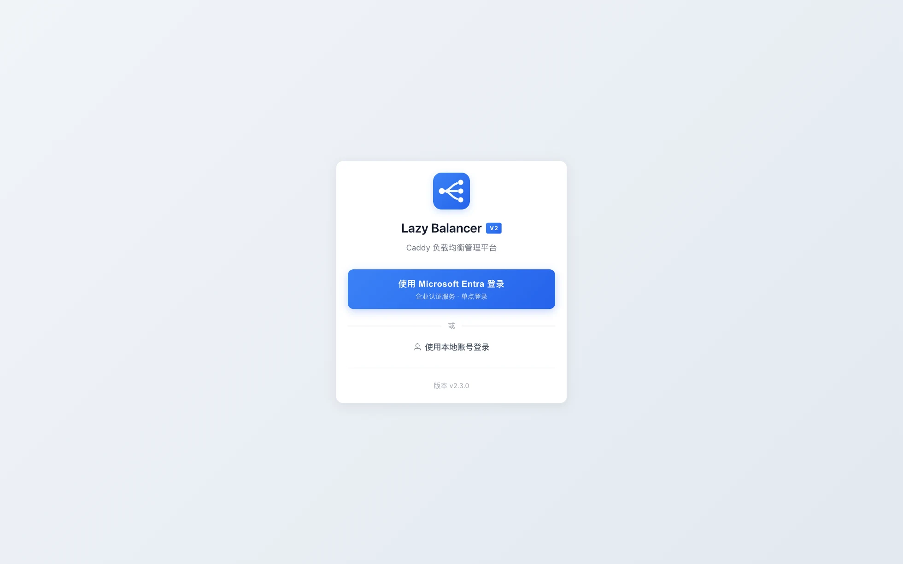
1.4 三分钟发第一条规则
「负载均衡 → 新建规则」：填域名（如 app.example.com）和上游地址（如 10.0.0.11:8080），保存。面板会校验并直接应用到 Caddy。
把域名解析到服务器（或本地改 hosts），浏览器打开域名——流量已经穿过 Lazy Balancer 到达你的业务了。
「安全防护 → 安全策略」新建一条策略并绑定到这条规则，请求就会按第 3 章的流水线逐阶段过滤。
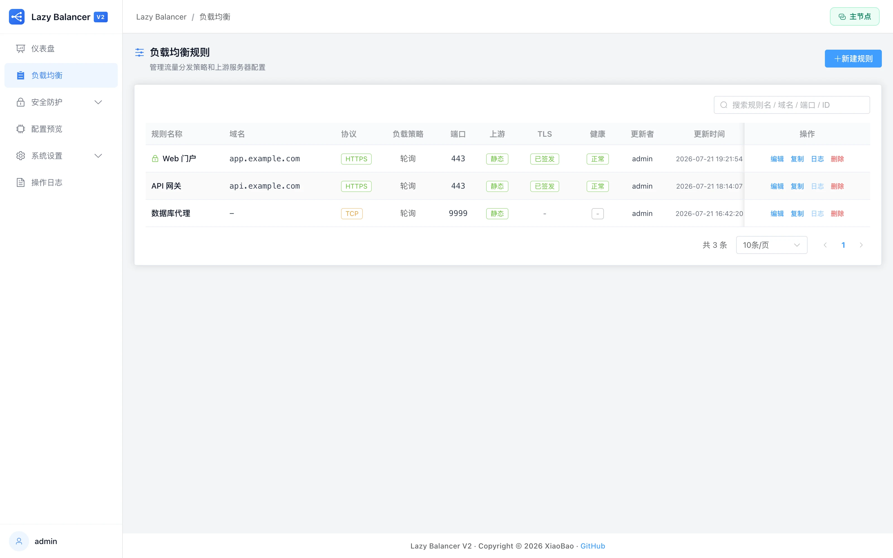
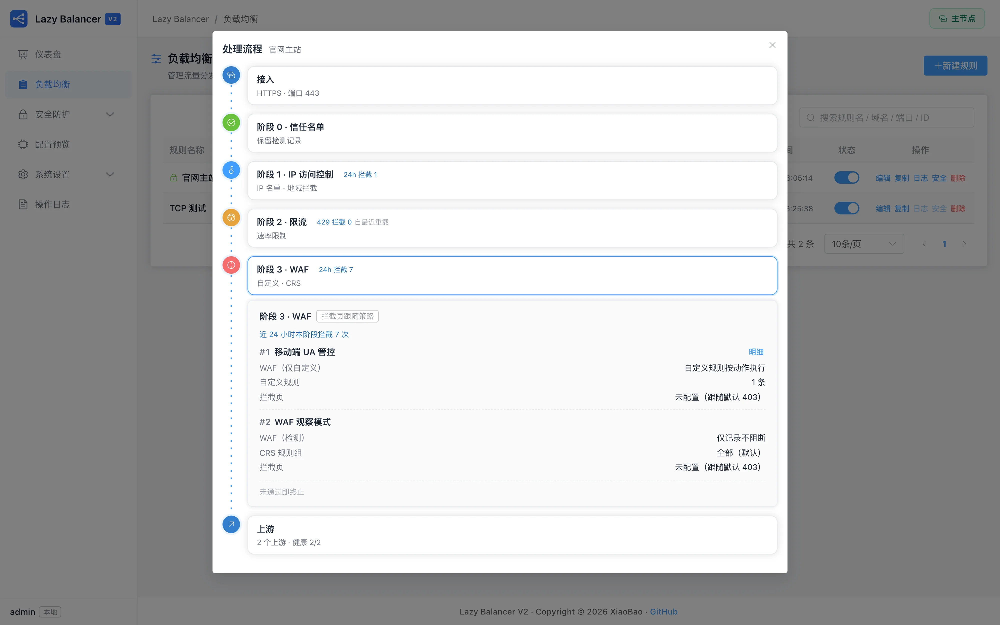
02负载均衡
「负载均衡」菜单。规则是流量入口，上游是业务落点——这一章讲怎么配。
2.1 HTTP 规则与 TCP 规则
HTTP 规则按域名分流（一个 443 端口可以挂很多个域名），支持 TLS 证书、路径路由和安全策略全家桶；TCP 规则是四层转发（按端口），适合数据库、MQTT 等非 HTTP 协议——只需要端口和上游，没有域名和 WAF 概念。
2.2 上游：多个与权重
一条规则可以配多个上游，权重决定各自分到多少流量（如 70/30 灰度）。权重是百分比，保存时面板会帮你换算。某个上游临时下线？把它禁用即可，不用删。
2.3 健康检查
开启后 Caddy 会主动探测上游，故障的上游自动摘掉、恢复后自动加回。规则列表的「处理流程」弹框里能看到每个上游的实时健康状态（健康 / 异常 / 未知）。
2.4 路径路由
同一域名下按路径再分流：/api/ 去一组上游，/admin 去另一台。支持精确 / 前缀 / 正则匹配，还能改写上游路径（/api/v1/users → /users）。多条路径规则按顺序排列，上面的优先。
2.5 超时与高级项
连接 / 响应头 / 读取 / 写入 / 空闲超时按默认即可；慢后端（报表、导出）建议单独调大「响应超时」。动态 DNS 上游适合地址会变的场景（按域名解析，定期重解析）。
2.6 TLS 证书
三种来源：ACME 自动签发（第 5 章，最省心）、手动上传（已有证书）、关闭 TLS（仅内网）。绑定后证书的到期时间会直接显示在规则卡片上，快到期会提前提醒。
2.7 复制与导入导出
「复制」一键克隆规则微调；整站配置的导出/导入在「系统设置 → 基础设置 → 配置备份」（第 9 章）。
03安全防护
「安全防护」菜单。每个请求按固定顺序过四道关——理解这条流水线，就理解了整个安全模块。
3.1 阶段流水线总览
自己人直接放行（可选保留检测记录），不消耗后面任何阶段。
黑/白名单、IP 地址列表、GeoIP 地域拦截，在 IP 层裁决。
按速率+突发挡洪水，超限直接 429。
OWASP CRS + 自定义规则检查请求内容，检测或拦截。
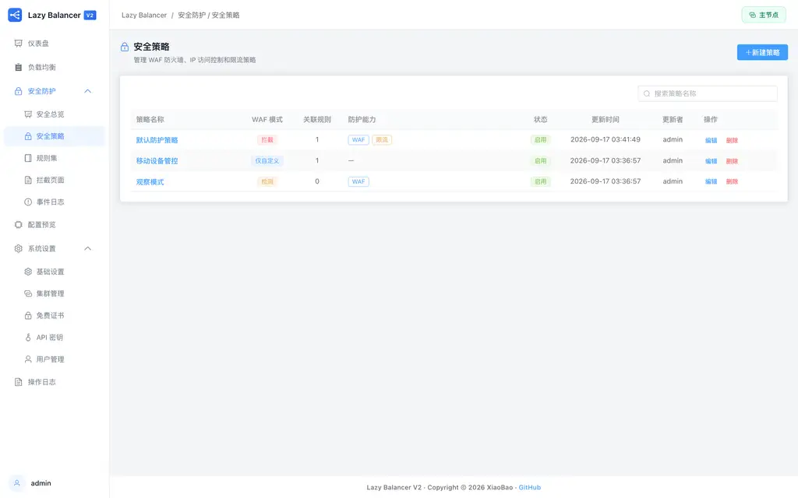
3.2 安全策略向导
「安全策略 → 新建策略」是四步向导。策略分四种类型，一条策略只管一个阶段（单职设计）：信任名单 / IP 访问控制 / 限流 / WAF。建好后在「绑定」里挂到规则上——一条规则最多绑 8 条策略，多策略按阶段自然叠加（同阶段多条策略的名单、规则会合并生效）。
3.3 信任名单（阶段 0）
把办公室 IP、内网监控加进来。两种模式：直通上游（默认，完全不过后面阶段，零开销零日志）；保留检测记录（放行但照常评估记录——「我想看看自己人都会访问什么」时用）。
3.4 IP 访问控制（阶段 1）
- 黑名单：命中就拦。可直接写 IP/CIDR，也可引用「IP 地址列表」（可复用的名单集合，内置三个威胁情报名单 只能在黑名单模式引用）。
- 白名单：只有名单里的 IP 能访问，其余全拦（管理后台类站点推荐）。
- 免检测名单：名单内的 IP 跳过本条策略。
- GeoIP 地域拦截：按省/市或「海外」放行或拦截，数据来自 IP2Region 库（第 4 章）。
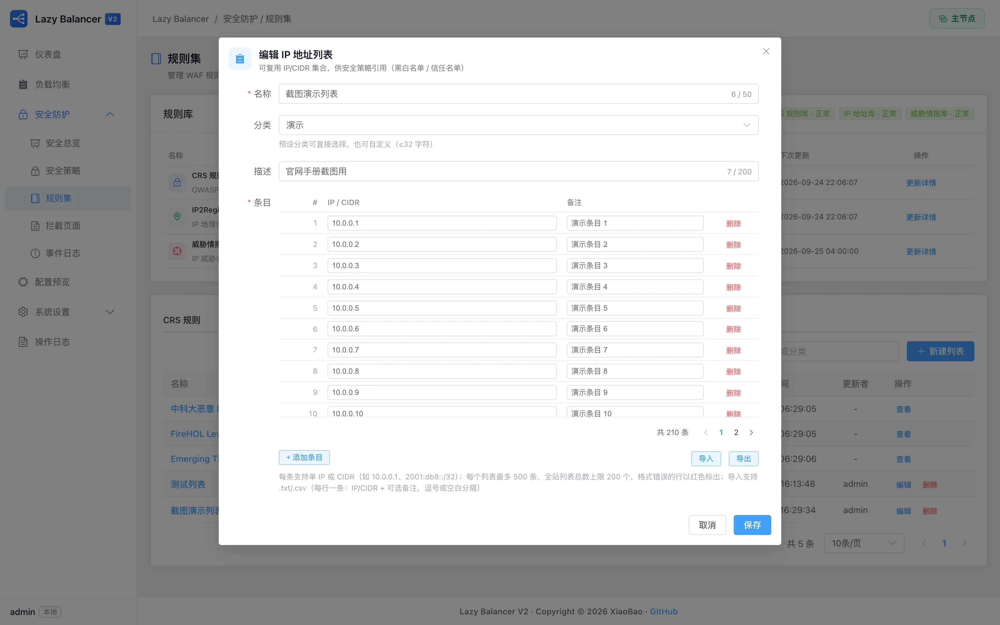
3.5 限流（阶段 2）
速率（每秒请求数）+ 突发（允许的短时超出量）。超限请求收到 429。限流在 WAF 之前执行——被限流的请求不会再消耗 WAF 评估。
3.6 WAF（阶段 3）
- 四种模式：关闭 / 仅自定义规则 / 检测（只记录不拦，灰度期用）/ 拦截。
- CRS 规则组：OWASP 官方规则集，按组开关；误报的单条规则可加进「排除」。
- 自定义规则：按 URI / 参数 / 请求头 / UA / 请求体匹配，动作为拦截、仅记录或放行计分——比如「/admin 路径仅允许特定 UA」。
3.7 拦截页面
「安全防护 → 拦截页面」可自定义被拦时用户看到的页面（默认页已内置）。拦截响应码有讲究：403 普通拦截、429 限流、481+ 是各阶段/各策略归因的合成码——面板的事件归因和「处理流程」都靠它定位到具体策略。
3.8 事件日志与安全总览
「事件日志」记录每一次拦截与放行记录（谁、什么时候、命中哪条规则、被哪条策略处置）；「安全总览」是仪表盘：攻击趋势、Top IP、Top 攻击类型、限流拦截数。排查误报时先在这里找到事件，点进去看命中的具体规则。
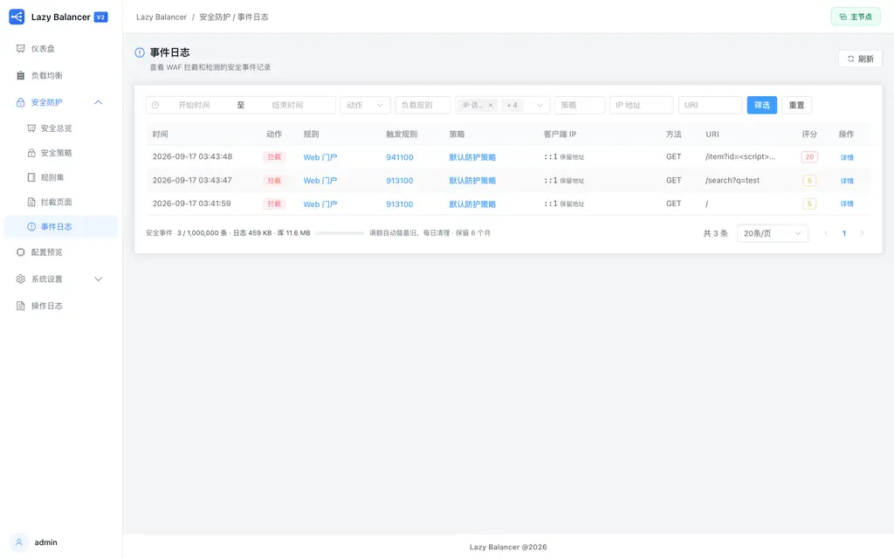
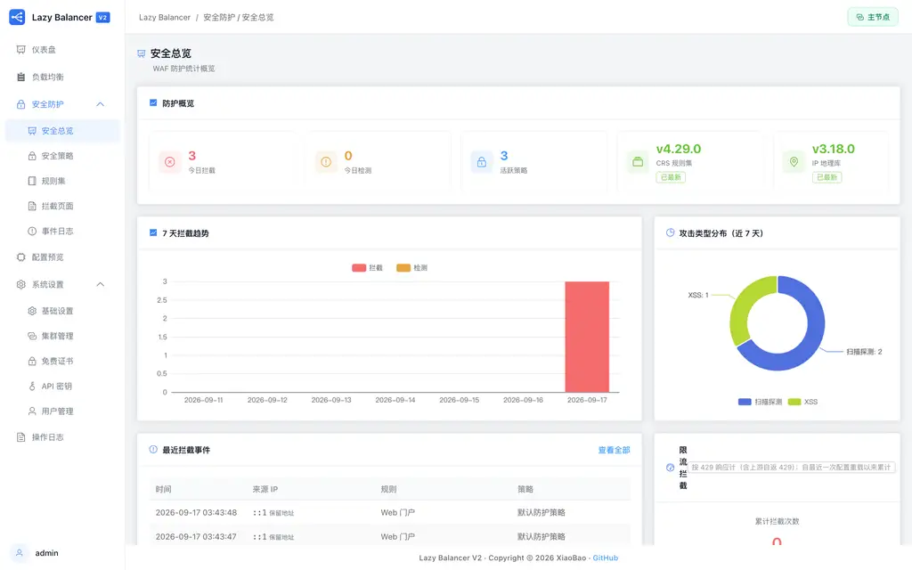
04规则库
「安全防护 → 规则集」。三库是安全防护的数据底座：保持更新，防护才跟得上威胁。
4.1 三个库
- CRS 规则库：OWASP 官方 WAF 规则集（阶段 3 的弹药），版本随镜像内置、可在线更新。
- IP2Region IP 库：IP 归属地数据（GeoIP 的弹药），离线 xdb 文件。
- 威胁情报库：三个内置恶意 IP 源（USTC 黑 IP / FireHOL Level 1 / ET Compromised），聚合后作为内置名单供策略引用。
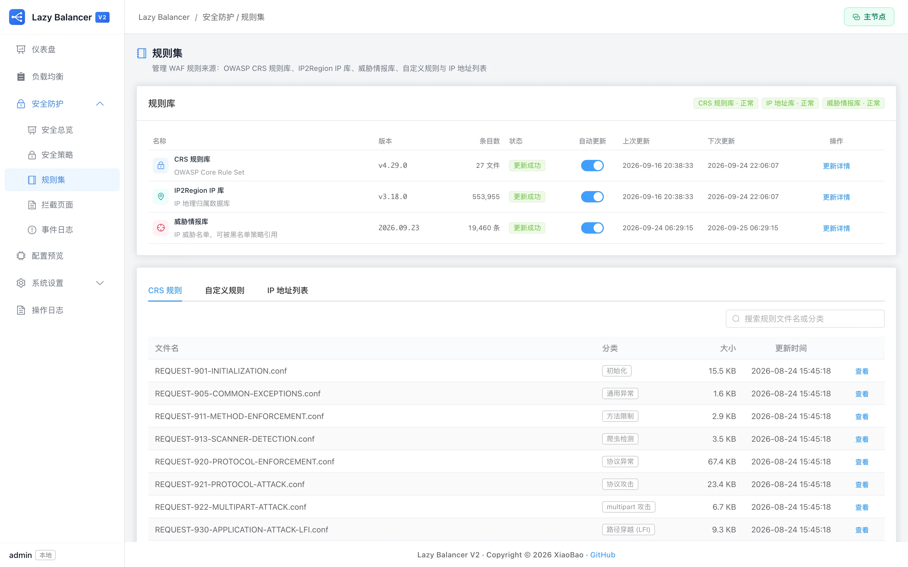
4.2 自动与手动更新
每个库都有「自动更新」开关和更新弹框里的「立即更新」。更新走两层哈希：先比原始内容、再比聚合结果——内容没变就只留一条「未变化」日志，不重写文件、不重载 Caddy。失败会自动按 1h→2h→4h→8h→24h 间隔重试，并回滚到上一个好版本。
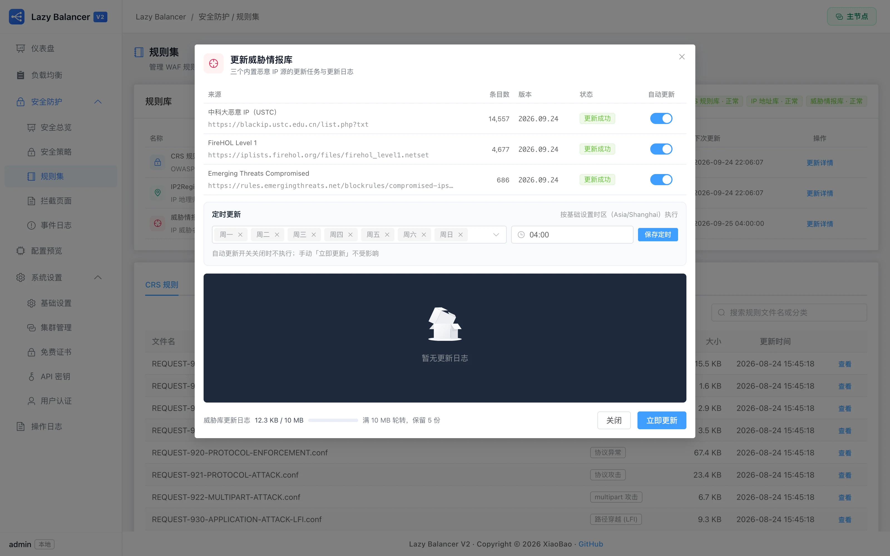
4.3 定时更新（星期 + 时间）
在任一更新弹框的「定时更新」区设置：星期多选（默认全选=每天）+ 时间（默认 04:00），按基础设置的时区执行。保存后「下次更新」列立即按新节奏重排；手动「立即更新」不受排程影响，随时可用。
4.4 缺库会怎样
规则文件缺失或损坏时卡片会亮红色「缺失/未安装」标签：安全链整体不渲染（不会因为规则不完整而误判放行），面板顶部也会出现醒目告警。重新安装或恢复备份后即恢复。
05免费证书
「系统设置 → 免费证书」。一次配置 DNS 凭证，之后证书自动签发、自动续期。
5.1 工作原理
走 ACME 协议的 DNS-01 验证：面板在你的 DNS 服务商处自动添加一条 TXT 记录证明域名归你，CA（默认 Let's Encrypt）随即签发——支持泛域名（*.example.com），也不需要 80 端口可达。
5.2 配置步骤
「证书配置 → 新建」：选服务商（腾讯云 / DNSPod），填入 API 密钥。密钥只存本机，可随时测试连通性。
规则的 TLS 来源选「ACME 自动签发」并选刚才的凭证，保存即自动排队签发。
「免费证书」页跟踪每个任务的进度（排队 → 验证 → 签发 → 部署），失败有明确原因和重试按钮。
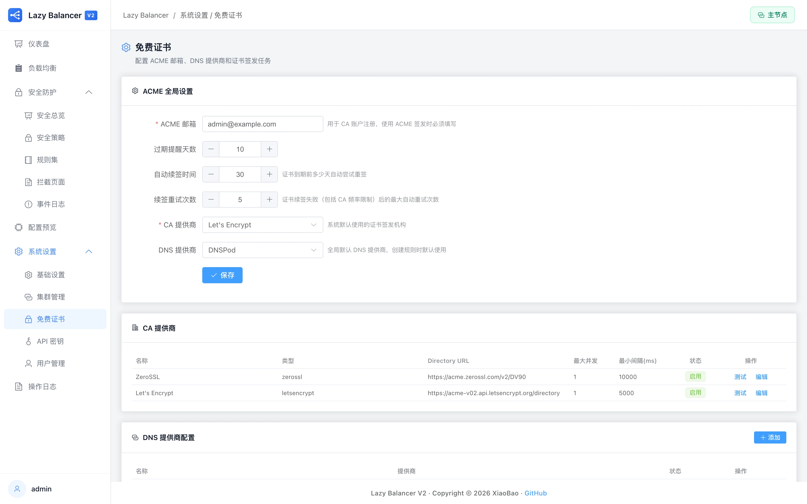
5.3 续期与重试
到期前自动续期（默认提前 30 天，可调），失败按冷却时间自动重试；撞上 CA 频率限制会进入排队冷却而非狂轰。多个 CA 提供商可配主备（Let's Encrypt / ZeroSSL / Buypass / Google）。
06集群管理
「系统设置 → 集群管理」。一主多从：主节点管配置，从节点自动同步、只读执行。
6.1 主从架构
主节点是唯一配置入口（全部写操作在这里）；从节点注册后经主节点审批加入，周期拉取快照同步全部规则/安全策略/用户/证书材料与 WAF 文件，从节点面板一律只读。任何一台从节点都可以随时「提升为主节点」独立运行。
6.2 接入一台从节点
「集群管理 → 注册令牌 → 生成」，令牌一次性、限时有效。
新实例切到「从节点」模式，填主节点地址（如 http://主节点IP:8000）和令牌。
主节点「节点列表」里确认待审批节点并批准——从节点随即开始同步，证书指纹（TOFU）同时钉扎防中间人。
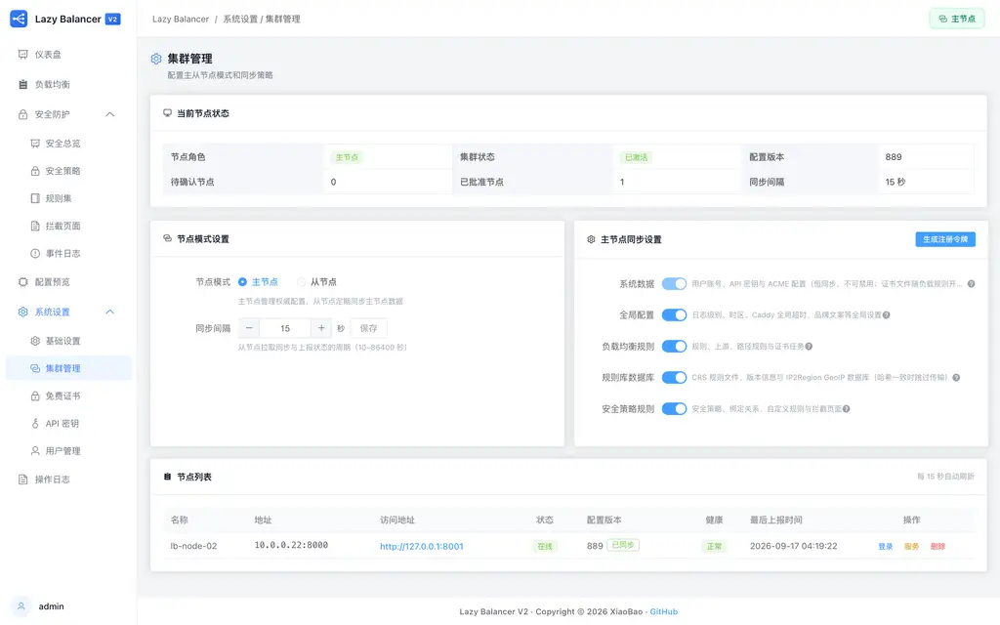
6.3 同步什么、多久同步
同步内容：规则与上游、安全策略与名单、用户与 API 密钥、证书任务与材料、全局配置、WAF 规则库文件。默认每 60 秒一次增量（内容没变就走 304 零开销）；从节点数据被带外改动时自动检测漂移并全量自愈。从节点的「最近同步」时间与结果在双方面板都可见。
07系统设置
「系统设置」菜单。基础行为、人、钥匙、账——都在这一组页面里。
7.1 基础设置
- 时区：日志时间戳、规则库定时更新都按它执行。
- 日志大小与保留：各类日志的轮转阈值与保留月数。
- 强制 HTTPS：管理面板只走 HTTPS（默认开）。
- GitHub 加速：CRS/IP2Region 下载代理，国内网络必配。
- 受信代理（CDN 真实 IP）：站点经 CDN/前置代理回源时必开——按网段 + 请求头取真实客户端 IP，否则 IP 黑白名单、GeoIP、限流判的都是 CDN 边缘 IP。
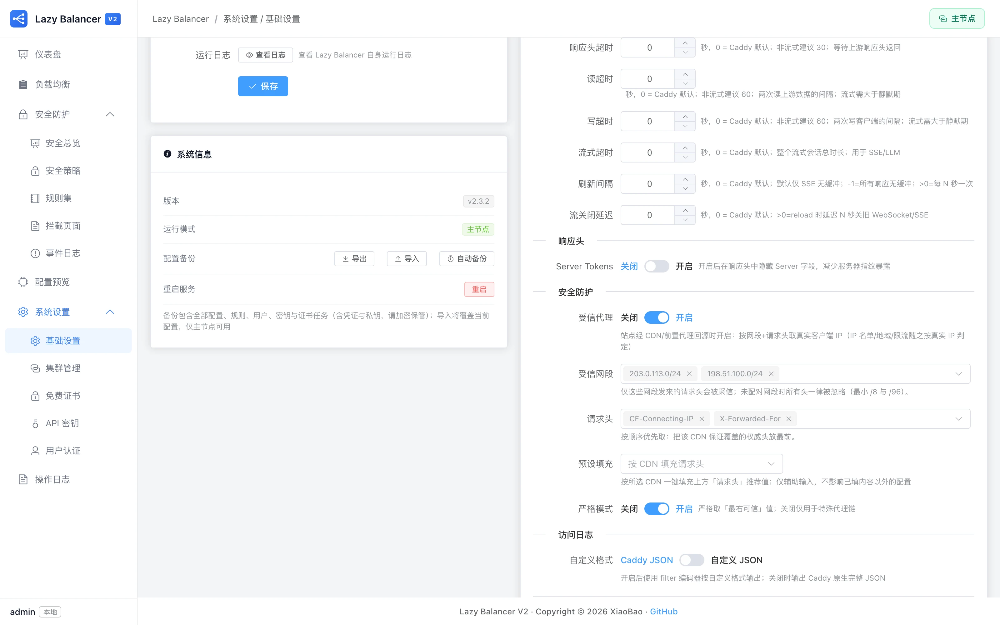
7.2 用户认证
用户与角色：管理员全权；普通用户全局只读 + 自助（改自己密码/显示名、管自己的 MFA 和 API Key）。MFA（TOTP）：验证器 App 扫码绑定，另有 10 枚一次性恢复码；「MFA 写操作验证」开启后，敏感写操作需再输一次验证码。OIDC 单点登录：接企业认证服务（Keycloak/Authentik 等），自动开户，本地账号始终保留兜底。
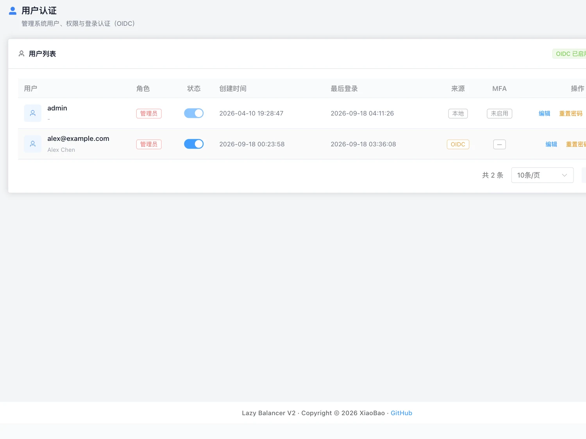
7.3 API 密钥
给脚本和 Agent 用的长期凭证（lb_sk_ 前缀）：读写 / 只读两种权限，可配 IP 白名单，可单独开关 MCP 功能。只读 Key 没有任何写面（含导出/下载备份），泄露风险最小化——自动化场景优先发只读 Key。密钥只显示一次，请立即保存。
7.4 操作日志
所有配置变更都有审计：谁、什么时候、改了什么、结果如何、来源 IP。按人/动作/对象/时间筛选，是回溯「谁动了我的配置」的唯一入口。
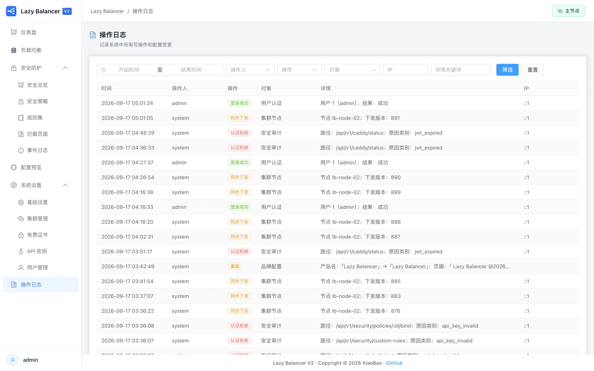
08API 与自动化
面板能做的，API 都能做——两条路：REST 直接调，或让 AI Agent 经 MCP 调。
8.1 REST API
全部能力暴露在 /api/v1 下，认证用登录令牌（Authorization: Bearer <JWT>）或 API Key。面板内置在线文档 /api/v1/docs（Swagger UI，需登录后访问，规格文件 /api/v1/openapi.yaml 同样需认证）——每个端点的参数、示例、错误码都在里面。
curl -sk https://127.0.0.1:8000/api/v1/rules \
-H "Authorization: Bearer lb_sk_..."8.2 MCP（AI Agent 接入）
面板内置 MCP 服务（POST /api/v1/mcp），注册 128 个工具：规则、策略、证书、集群、审计、诊断全覆盖。给 Agent 发一把开了 MCP 的 API Key（建议只读+IP 白名单），Claude Code / Cursor 等客户端即可直接运维你的负载均衡。配套运维手册（playbook）随服务下发，Agent 拿到就知道怎么按正确顺序操作。
09运维手册
升级、备份、日志与常见问题的参考答案。
9.1 升级
docker compose pull && docker compose up -d配置与数据都在卷里，升级零迁移。覆盖重发同版本号时（latest 或同 tag），docker pull 后重建即可。
9.2 数据与备份
- 数据在哪：
lb-data卷（SQLite 主库/指标库/审计库 + JWT 密钥），logs/certs/waf/backup目录。 - 自动备份：「系统设置 → 自动备份」按天/周/月定时落盘到
backup/，保留份数可调，一键还原。 - 手动导出/导入：「基础设置 → 配置备份」导出
.lbbak（含凭证与私钥，请加密保管），换机迁移即导入。导出/导入/还原均为管理员专属操作，写保护开启时需 MFA 验证。
9.3 日志在哪
容器内 /app/logs（映射到宿主 ./logs）：应用运行、Caddy 访问与运行、WAF 审计、证书任务、规则库更新、集群同步——每类都有大小轮转，面板内也能直接查看大部分日志。
9.4 常见问题
docker exec -it lazy-balancer sh，用 sqlite3 把 users 表管理员行删除（DELETE FROM users WHERE username='admin';）后重启容器，面板会重新走「首次创建管理员」流程。操作前请先备份数据卷。